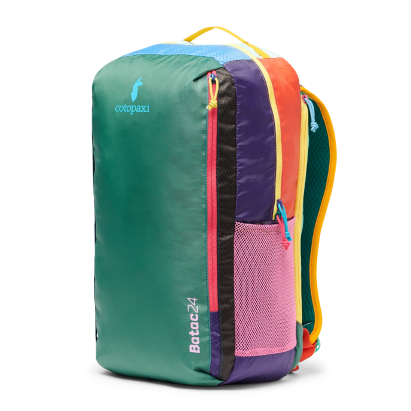

Hydration Ready
Dedicated sleeve fits bladders up to 3L with a hose pass-through to keep you fueled on any trail.
A do-it-all daypack with ample space and compartments you'll love — from trailhead to city street.
SHOP NOW

Dedicated sleeve fits bladders up to 3L with a hose pass-through to keep you fueled on any trail.

Internal sleeve divider, hanging pocket, and front zippered pocket keep every item sorted and within reach.

Padded protection for your laptop so you can move from trailhead to desk without switching bags.

Every bag is one-of-a-kind, crafted from remnant fabrics in vibrant, never-repeated colorways.

Cotopaxi
Our best-selling Batac 24L is a streamlined pack for fast-and-light daytrips, hikes, and other excursions. Unstructured for easy loading, with a main zippered compartment, front vertical-zip pocket, and two mesh water bottle pockets.
$110.00
Buy NowBatac 24L Daypack — Del Día
| Spec | Value | Notes |
|---|---|---|
| Best Use | Hiking | Trail & urban |
| Bag Style | Backpack | Unstructured |
| Frame Type | Frameless | Ultra-light build |
| Gear Capacity | 24 liters | Full-day carry |
| Weight | 1 lb. 0.9 oz. | Ultralight |
| Material(s) | 100% nylon/polyester | Recycled fabric |
| Dimensions | 19 × 11 × 4 in | Fits overhead bin |
| Pack Access | Top/panel | Dual entry |
| Reservoir Compatible | Yes | Up to 3L bladder |
| Gender | Unisex | One size |

Questions about the Batac 24L? We'd love to hear from you.